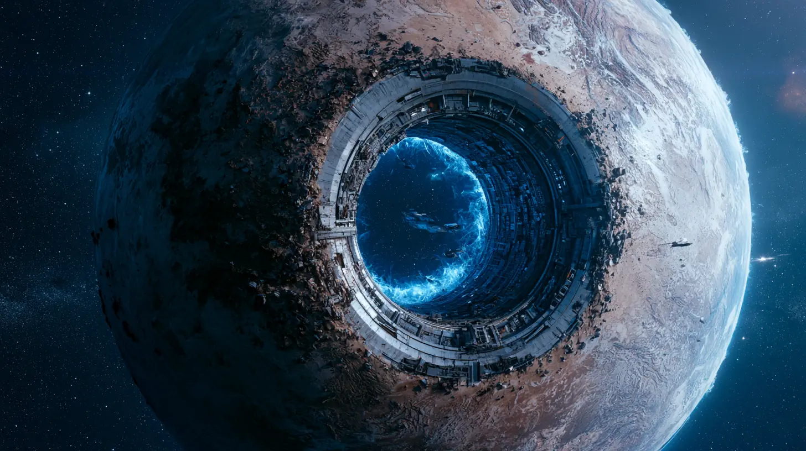

The beginning
The gate at Eris
Humanity’s golden age began when deep-space explorers discovered that the dwarf planet Eris was an ancient stargate.
After a research team activated the gate, probes went out to discover a vast network of star systems with habitable planets—some richer than Earth. To finance exploration and colonization, privately owned megacorporations were formed. Despite their seemingly altruistic goals, the megacorps shifted their focus to exploiting every resource beyond Eris for private gain. Soon, everyone who worked for them became corporate citizens and settled these worlds as the first colonists.